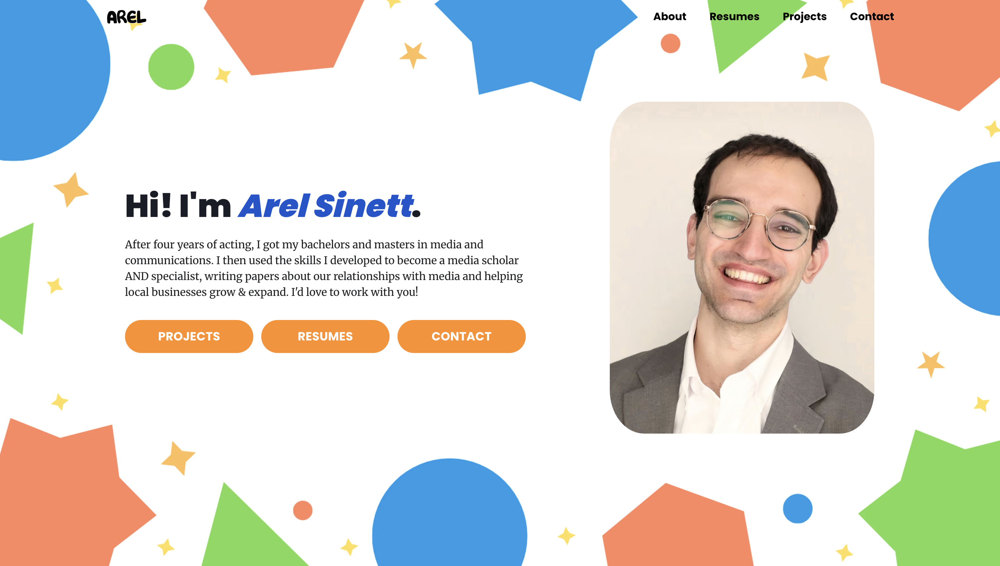
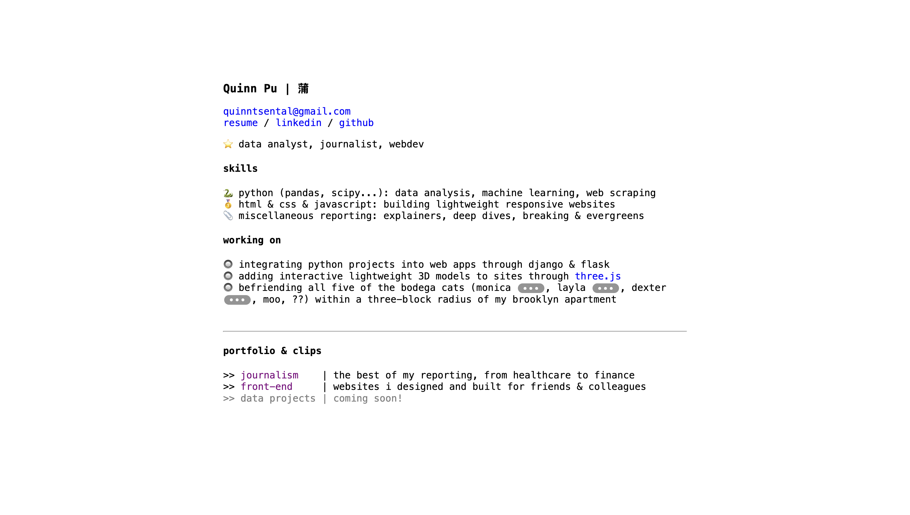

websites ↩
⇱ Dan Toomey

When Dan Toomey (of Good Work fame) reached out to me for a website commission, he asked for a style reminiscent of the early 2000's - a time period during which, for the most part, I was not on the internet 1.
Some research, Wayback Machine-surfing, and one atrocious concept draft later, I started building. The design was straightforward, but what to use as the signature old-school GeoCities clutter came as a challenge.
⇱ Arel Sinett

Big shift in tone from the last one! While job hunting, Arel Sinett (of Sinett family fame) wanted a website to showcase his various skillsets, from media & communications to teaching. I went for a LinkedIn recruiter-friendly, super approachable style that showed past projects, resumes, and contact information.
⇱ Quinn Pu

Woah, what's this? My website inside my website? If you click on it it takes you back to this website, which technically means you didn't go anywhere, but you should try it anyway in case Google counts it as a separate visit.
My main goal for my own site was a lightweight, simple showcase of my skills and other projects. Sure, it's not the fanciest thing with CSS animations and all, but you bet it's accessible!